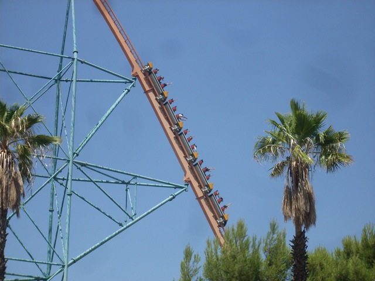
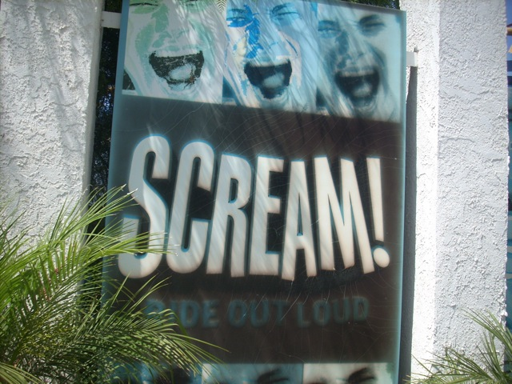
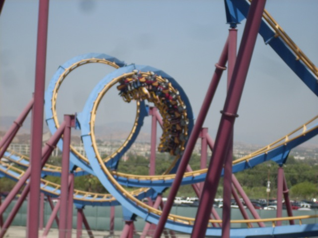
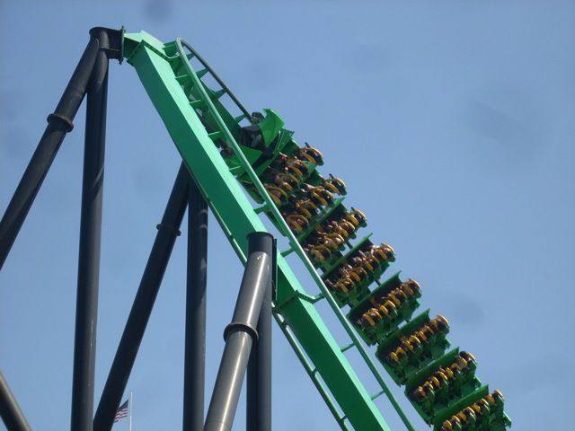

Six Flags Magic Mtn Summer 2009
 Well, since my cousin from Virginia was out in CA and had a crappy visit to Magic Mtn last year, we took him again this year for a better visit, and unfortunetly, this years visit was just as bad as last years visit as today was Stick It and Suck It Day. (Damn you Jack FM!)
Well, since my cousin from Virginia was out in CA and had a crappy visit to Magic Mtn last year, we took him again this year for a better visit, and unfortunetly, this years visit was just as bad as last years visit as today was Stick It and Suck It Day. (Damn you Jack FM!)
 First off, get in line for Tatsu for a good long time.
First off, get in line for Tatsu for a good long time.
We should've gotten a Qbot.
 Well, at least Tatsu was running really freaking good today.
Well, at least Tatsu was running really freaking good today.
By the time we got off Tatsu, everybody wanted lunch, so went to the one place with Air Conditioning.
"Ah man. Why did we have to come on this day? This isn't fun. It's just disgusting."
"Ah Damn it! I was hoping the burgers were made from real moose."
 Everybody ready to wait in another disgusting line?
Everybody ready to wait in another disgusting line?
 Luckily the ride operators here realize that it is crowded WAY beyond the Having Fun Limit and made sure to keep the line moving as fast as possible unlike another certain ride here.
Luckily the ride operators here realize that it is crowded WAY beyond the Having Fun Limit and made sure to keep the line moving as fast as possible unlike another certain ride here.

Goliath was fun, as usual.

Up next, Scream.
 No matter how disgustingly crowded it is, Scream seems to ALWAYS have a reasonable wait.
No matter how disgustingly crowded it is, Scream seems to ALWAYS have a reasonable wait.

Well, at least I was able to get on this.
 Hmm. Usually we never have to wait in line for Riddlers Revenge.
Hmm. Usually we never have to wait in line for Riddlers Revenge.
 But today, they closed the Single Riders Line because it was too crowded to use it.
But today, they closed the Single Riders Line because it was too crowded to use it.

Well first off, I feel that when it's this Disgustingly Crowded, Six Flags should ADVERTISE the Single Riders Line, NOT SHUT IT DOWN!!!!!!!!
 But second of all, if they close the Single Riders Line due to it being too crowded, that usually means "STAY THE F*CK AWAY FROM THIS RIDE!!!!!!!!!!" Unfortunetly, I had to wait in line for it.
But second of all, if they close the Single Riders Line due to it being too crowded, that usually means "STAY THE F*CK AWAY FROM THIS RIDE!!!!!!!!!!" Unfortunetly, I had to wait in line for it.
 I haven't waited in a line for Riddlers Revenge this long in over 8 years!!!
I haven't waited in a line for Riddlers Revenge this long in over 8 years!!!
 Hello Viper. I may not be riding you today due to your disgustingly unrealistic long line, but I know about your recent actions.
Hello Viper. I may not be riding you today due to your disgustingly unrealistic long line, but I know about your recent actions.
 Or should I call you, Hair Gel the Ride. I know about the shameful things you did to your trains.
Or should I call you, Hair Gel the Ride. I know about the shameful things you did to your trains.
 A line for X2 all the way out to here, I expected that.
A line for X2 all the way out to here, I expected that.
 "WHAT THE F*CK DO YOU THINK YOU'RE DOING ONLY RUNNING ONE TRAIN ON YOUR MOST POPULAR COASTER ON ONE OF THE MOST CROWDED DAYS YOU'VE HAD IN 8 YEARS!!!!!!? WHAT THE F*CK IS WRONG WITH YOU!!!!!!?"
"WHAT THE F*CK DO YOU THINK YOU'RE DOING ONLY RUNNING ONE TRAIN ON YOUR MOST POPULAR COASTER ON ONE OF THE MOST CROWDED DAYS YOU'VE HAD IN 8 YEARS!!!!!!? WHAT THE F*CK IS WRONG WITH YOU!!!!!!?"
 Well, at least I laughed my ass off when Allie rode X2 for the first time.
Well, at least I laughed my ass off when Allie rode X2 for the first time.
 "MY SHIRT IS GOING TO FLY OFF!!!!!!!!!!!!!!!!"
"MY SHIRT IS GOING TO FLY OFF!!!!!!!!!!!!!!!!"
 Well, today was really freaking crowded. I haven't seen crowds like todays since Last 2005 Update and PACKED SFMM Saturday. (Though I had free fastpasses and Riddlers Single Riders Line was open during PACKED SFMM Saturday.) Guess I'll just have to come back soon.
Well, today was really freaking crowded. I haven't seen crowds like todays since Last 2005 Update and PACKED SFMM Saturday. (Though I had free fastpasses and Riddlers Single Riders Line was open during PACKED SFMM Saturday.) Guess I'll just have to come back soon.
 Next time I see the parking lot this full, I'm going to turn around and head straight back home.
Next time I see the parking lot this full, I'm going to turn around and head straight back home.
Home